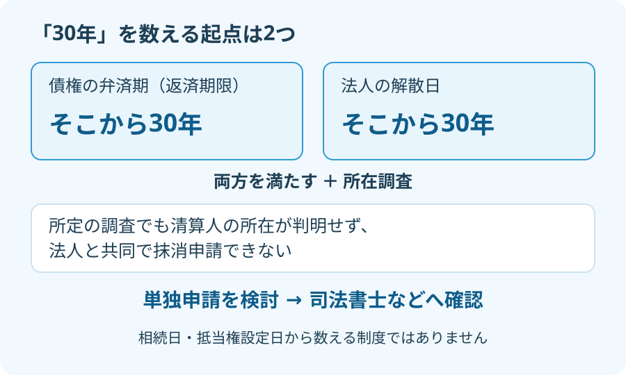

相続した土地の登記簿を開いたら、聞いたことのない会社の抵当権が残っていた。会社の電話番号も分からない。そんなとき、「昔の借金だから放っておけばいい」とも、「この土地はもう売れない」とも決めないでください。調べる順番があります。
大石浩之（磐田市／不動産業）です。宅地建物取引士として私が気にするのは、古い記録の存在より、売却の段取りを誰も確認していない状態です。本記事は2026年9月20日時点の公式条文をもとに、解散した法人が関係する抹消手続を整理します。
30年は、弁済期と法人の解散日から数える
不動産登記法第70条の2は、解散した法人の担保権について、条件を満たせば登記権利者が単独で抹消を申請できると定めています。抵当権を消してもらう所有者側が、相手方と共同せずに申請できる仕組みです。2023年4月1日施行の見直しにより設けられました。
抵当権は、借入れなどの債権を担保するために土地や建物に設定する権利です。「休眠抵当権」は、古いまま残り、権利者との連絡などが難しくなった抵当権について使われる呼び方です。登記簿に「休眠」と書いてあれば消せる、という意味ではありません。
| 確認する条件 | 起点・内容 | 取り違えやすい点 |
|---|---|---|
| 弁済期から30年 | 担保される債権の返済期限から数える | 抵当権を設定した日とは別 |
| 法人の解散日から30年 | 担保権者である法人の解散日から数える | 店を閉めた日や電話が切れた日ではない |
| 所定の所在調査 | 調査しても清算人の所在が判明せず、共同申請できない | ネット検索だけで完了とはならない |
意外かもしれませんが、相続から30年待つ制度ではありません。土地を相続したばかりでも、弁済期と解散日が条件を満たす可能性はあります。反対に、抵当権の設定から50年が過ぎていても、それだけで2つの30年要件を満たしたとはいえません。
例えば、弁済期が1990年、法人の解散が2000年だったと仮定します。2026年9月20日時点では、弁済期からは30年を超えていても、解散からは30年に届きません。これは説明用の仮定で、実際の相談事例ではありません。日付と資料の読み方は専門家に確認を。
私は、連絡できない相手のために権利関係の整理が止まる状況へ、申請の道を用意した点を評価します。売却だけでなく、家族に次の管理を引き継ぐ準備にも役立ちます。ただし、「古い担保は簡単に消せる」という説明には賛成しません。年数と調査を証明する仕事は残っています。

電話が通じないだけでは、所在調査にならない
不動産登記規則第152条の2には、法人やその代表者の所在を調べる方法が定められています。法人の登記事項証明書の請求、判明した代表者の住民票の写し等の請求、配達を試みたことを証明できる方法による書面送付などです。状況に応じた調査が必要になります。
清算人とは、解散した法人の財産や債務を整理する役割の人です。会社の営業が終わっていても、その清算人の所在が分かる場合があります。「店舗がない」「ホームページがない」という話と、法令上の調査でも清算人の所在が分からないという話を分けます。
合併で会社名が消えている場合にも注意してください。同規則は、合併が判明した場合、存続した法人や新たに設立された法人の登記を調べる方法を示しています。名前が古いというだけで、相手方がいなくなったと判断するのは早計です。
家族が自力で手当たり次第に証明書を集める前に、司法書士へ調査の範囲を相談するのが私の提案です。どの記録を取り、どこへ書面を送り、その結果を何で残すか。返送された郵便や取得した証明書は、封筒も含めて保管します。必要な調査と添付資料の個別判断は専門家に確認を。
なお、不動産登記法第70条には、別の要件で抹消を申請する規定もあります。本記事の解散法人に関する30年要件と、弁済期から20年の経過に供託を組み合わせる方法を混同しないでください。供託とは、所定の金銭を供託所に預ける手続です。どの方法を使うかは専門家に確認を。
売却前にそろえる資料と、司法書士への聞き方
相続土地の抵当権を調べる入口は、現在の土地・建物の登記事項証明書です。所有者の記録と担保の記録を分け、対象となる不動産と権利者を確認します。取得方法は登記事項証明書を取得するときの確認事項にまとめています。
| 手元で探すもの | 相談で確かめること |
|---|---|
| 土地・建物の登記事項証明書 | 抵当権者の名称・住所、対象不動産、順位番号 |
| 借用証書・返済予定表・領収書 | 弁済期や返済に関する記載があるか |
| 古い会社との手紙・返送郵便 | 連絡先や調査の手がかりになるか |
| 相続関係の手元資料 | 申請する人と、名義を整える手続の順序 |
表は初回相談の準備です。法定の添付書類をすべて列挙したものではありません。弁済期が登記事項証明書に見当たらないなら、「記載なし」と伝えます。抵当権設定日を代わりに書き込んではいけません。資料が見つからないときの取扱いも、司法書士や管轄登記所への確認事項です。
相談では、「第70条の2を検討できる案件か」「2つの日付を何で確認するか」「調査に必要な資料と費用は何か」を聞いてください。費用は証明書等の実費、所在調査、申請に関する報酬など、見積もりの範囲を分けてもらいます。追加調査が必要になった場合の連絡方法も決めておきます。
私は、資料を見る前に「いくらで、何日あれば消せる」とは言えません。抹消の方法も作業量も確定していないからです。家族が知りたいのは総額でしょうが、まず初期調査でどこまで分かるのかを聞くほうが、比較できる見積もりになります。
完済の有無と登記が消えているかも別の確認です。通常の住宅ローンを含む基本の整理は、抵当権とローン残高を売却前に確認する手順をご覧ください。残っている登記の金額だけを、現在の返済残高と決めつけないでください。
磐田・袋井の相続土地は、売る判断と調査を分ける
磐田市・袋井市の相続土地でも、抵当権抹消の基本要件は同じです。一方、売却準備では、土地だけでなく建物にも担保が付いていないか、名義の整理が済んでいるかを物件ごとに確認します。地元の土地だから短期間で片付く、と約束できる話ではありません。
私はこう考えます。売るかどうかは、まだ決めなくていい。だが、消せるか分からない抵当権を、消せる前提で売却日程に組み込まない。査定額を出すことと、その条件で引き渡せることは別です。買主が決まった後に調査を始める段取りでは、ご家族も買主も予定を立てにくくなります。
私にも迷うところはあります。まだ売る気持ちのないご家族へ、どこまで費用をかけた調査を勧めるかです。全てを一度に頼む必要はありません。まず手元の登記と資料を見てもらい、次の調査の費用と目的を聞く。その説明で納得できた範囲から進めるのがよいと考えます。
担保を消す相談と、亡くなった方から相続人へ名義を移す相続登記も分けて整理します。「抹消を調べているから相続登記も待ってよい」と自己判断しないでください。相続登記の期限と磐田・袋井での準備も確認し、申請の順序や期限の個別判断は専門家に確認を。
今日の確認は、乙区の会社名を一行写すこと
今日できる一歩は、登記事項証明書の担保の記録がある乙区から、抵当権者の名称と住所を一行に写すことです。まだ証明書がなければ、まず取得対象の地番を確認します。売却するかを決める前でも、相談の入口は作れます。
- 弁済期と解散日は別々に記録し、不明な欄は空欄のまま相談する。
- 会社が見つからなくても、所定の所在調査を終えたとは考えない。
- 抹消の方法・費用・見通しを確認してから、売却日程を組む。
富士ヶ丘サービスは、介護施設の運営から不動産事業を始め、磐田市・袋井市を中心に介護と実家の相談を一体で受けています。家族が困らない売却のために、私は価格の前提となる資料を整理する順番で案内します。登記の申請や相続の個別判断は、司法書士などの専門家に確認を。